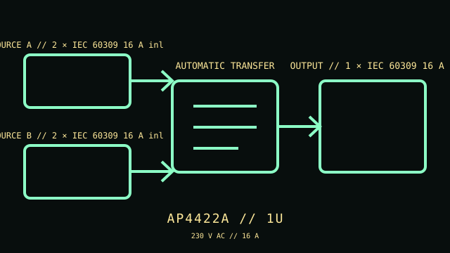

[ AUTOMATIC TRANSFER SWITCH // IDENTIFIED SKU ]
APC NetShelter Rack ATS AP4422A
The AP4422A is an APC NetShelter rack automatic transfer switch for transferring compatible single-cord equipment between two AC sources. It stores no energy: actual load continuity depends on available, electrically compatible sources and the connected equipment’s hold-up time.

ARCHIVAL IDENTIFICATION: Record the complete part number, serial/date code, region, hardware/firmware and network-card revision, cord/accessory set and nameplate ratings. Do not infer electrical equivalence from a related model name.
Exact model specifications
| Model / topology | AP4422A; rack automatic transfer switch, dual independent source inputs to one output load path. |
|---|---|
| Voltage / current / frequency | 230 V AC; 16 A maximum model rating as labeled; single-phase, 50/60 Hz within the specified source tolerance. North American regulatory deratings shown above apply where stated; continuous-load and branch-circuit limits are governed by the equipment label and local electrical code. |
| Inputs | Two source inputs: 2 × IEC 60309 16 A inlets. Both must be within the AP4422A’s allowed voltage/frequency ranges and source configuration. |
| Outputs | 1 × IEC 60309 16 A outlet. The total output is limited by the unit’s nameplate current and any outlet/breaker limits; per-outlet ratings must be checked in the product documentation. |
| Phase / pole count | Single-phase. Connector circuit configuration is 2-pole plus protective earth (2P+E); protective earth is not a transfer pole. Schneider’s public specification does not state a separate internal switched-pole count or neutral-transfer arrangement for this SKU; verify the wiring diagram and neutral design in the manual before connecting separately derived sources. |
| Switching / transfer time | 10 ms transfer time per the APC rack ATS family specification under supported source conditions. Actual interruption varies with the source waveform and operating conditions. Transfer is break-before-make; it is not a UPS and has no ride-through battery. Confirm source qualification thresholds and transfer/retransfer behavior against the matching manual and firmware. |
| Network / metering | Network-management card (NMC) provides remote status/configuration and Web/SNMP management; functions and protocols depend on the installed NMC/firmware. Source/status monitoring is available through the management interface. This is not a switched PDU: no per-outlet switching or per-outlet metering is specified for this ATS. |
| Rack / mounting | 1U, horizontal rack-mount design for a standard 19-inch equipment rack; confirm depth, brackets, clearance, grounding and airflow with the exact installation guide. |
| Electrical and host compatibility | For compatible single-cord loads whose voltage, frequency, connector, current and transfer-interruption tolerance match the nameplate. Both feeds must be suitably rated and wired sources; do not parallel or interconnect source circuits. Dual-cord equipment should follow its manufacturer’s independent-feed design rather than treating this ATS as a redundant feed. |
| Electrical safety | Use grounded, correctly rated feeds and unmodified cords. Observe branch overcurrent protection, local continuous-load derating, aggregate and connector limits; never exceed nameplate ratings or daisy-chain. Keep protective earth intact. Do not service while energized; installation and source/neutral compatibility must be checked by qualified personnel under applicable codes. Discontinue use for heat, arcing, damaged insulation, loose contacts or compromised grounding. |
Manufacturer product and manual sources
- Schneider Electric / APC manufacturer product record for AP4422ASKU-level product listing and electrical connector/rating identity. Match the complete regional suffix and nameplate.
- Schneider Electric Rack ATS AP44xx series user guide, document 990-5844_ENManufacturer installation, operation and safety documentation for AP44-series ATS models. Confirm that the manual revision lists the exact hardware variant; if not, use the model-specific manual in Schneider’s document library.